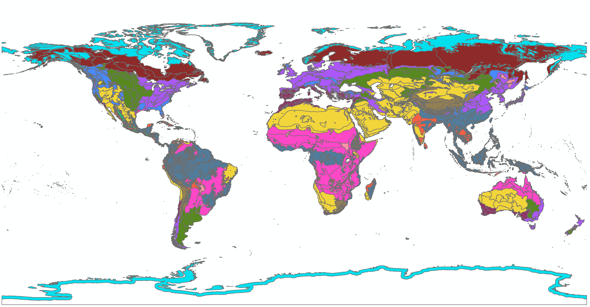

Causal Inference with Spatial Data
(ArcGIS 10 for Economics Research)
Lecture 2
Spatial Join
Masayuki Kudamatsu
28 August, 2018
Press SPACE to proceed.
To go back to the previous slide, press SHIFT+SPACE.
What is Spatial Join?
Match features from two vector datasets by location
- No need of common keys (e.g. district code) to match data
- Allow you to match administrative data with natural environment data
Example: Terrestrial Ecoregions
Henderson et al. (2018) find these ecoregions predict where economic activities take place
But we cannot easily match this data to administrative areas without spatial join
Spatial Join and Weather Data
Weather data: increasingly popular among economists
- Interest in climate change (Dell et al. (2014) for a survey)
- Since weather is exogenous, causality can be established
But grid cells are the units of observation in weather data
How can we match weather with socio-economic units?
$\Rightarrow$ Spatial Join helps
Today's road map
1. Alsan (2015)
2. Replicate Alsan (2015)
3. Introduction to Python for ArcGIS
1. Alsan (2015)

Research Question
Did Tsetse flies cause Africa's underdevelopment?
Important?
- Tsetse flies: believed to be the cause of low agricultural productivity and high transportation cost historically
- Path dependence may explain Africa's underdevelopment today
Original?
- No systematic evidence on the impact of Tsetse flies
- Find Tsetse flies prevented political centralization
Feasible?
Data
Ethnographic Atlas + Murdock (1959)'s map
- Pre-colonial data on use of domesticated animals, presence of intensive agriculture, political centralization
Weather in 1871 from the 20th century reanalysis at 2°x2° resolution
- Average daily mean temperature / humidity: fed into a model to predict Tsetse fly survival
Ethnic homeland polygons matched with weather grid points? (no description in the text)
Empirical specification
\begin{align*} Y_j = \alpha + \delta TSI_j + \boldsymbol{X}'_{j}\boldsymbol{\omega} + \varepsilon_{j} \end{align*}
| $Y_j$ | Precolonial outcome for ethnic group $j$ |
| $TSI_j$ | Tsetse fly suitability index |
| $\boldsymbol{X}_j$ | Controls (incl.\ temperature, humidity in 1871) |
Main Results
 (Table 1 of Alsan 2015)
(Table 1 of Alsan 2015)
Prepare for the rest of this lecture
- Download the zipped dataset for lecture 2
- Save it in Desktop
- To unzip, right-click it and choose 7-Zip > Extract to "Lecture2\"
- Launch ArcMap 10 (it takes time)
Prepare for the rest of this lecture
Browse the inside of the Lecture2 folder
I've created four folders: code, input, output, and temp
-
code: files that edit datasets (e.g. Python scripts) -
input: original data files -
output: data files you have created -
temp: intermediate data files
ArcGIS tends to create lots of intermediate data files to create one data file that you really need.
2. Replicate Alsan (2015)
we will learn how to:
1. Use the Spatial Join tool (Exercise 2)
2. Export attribute tables to Stata (Exercise 3)
3. Create a graticule shapefile (Exercise 1)

(Image taken from ArcGIS Help "What are grids and graticules?")
Why graticule shapefile?
In some datasets (weather data in particular), the unit of observations is a grid point (latitude and longitude at equal intervals).
Examples other than what we have already seen:
- WorldClim (Dell, Jones, & Olken 2009)
- GCPC (Miguel et al. 2004)
- TOMS air pollution index (Jayachandran 2009)
A graticule shapefile allows you to spatially merge such data with other data
Exercise #1
Create 20th-century Reanalysis data grid cell polygons
Geo-processing tools to be used for this exercise:
- Create Fishnet
- Define Projection (Data Management)
- Add Geometry Attributes
As in Lecture 1, we use these tools in Model Builder.
- Create a Model
- Save it as "lecture2.tbx/exercise1" in "Lecture 2"
Exercise #1 (cont.)
20th-century Reanalysis data
Spatial resolution: 2° x 2°
Africa: roughly spans within
- 40° S to 40° N
- 20° W to 60° E
$\Rightarrow$ Create square polygons whose centroid is from (-20°, -40°) to (60°, 40°) at the interval of 2°
- We will see why polygons, not points
Exercise #1: Step 1
Create Fishnet
Output Feature Class: \Lecture2\output\fishnet.shp
-
Always good idea to save outputs in a different directory (
Lecture2/output, in this case)
Fishnet Origin Coordinate
X Coordinate: -21
Y Coordinate: -41
$\Rightarrow$ Bottom-left polygon's centroid will be (-20°, -40°)
Create Fishnet (cont.)
Y-Axis Coordinate
X Coordinate: -21
Y Coordinate: -10 (or any value other than -41)
$\Rightarrow$ Y-Axis will be perpendicular to the horizontal X-Axis
Number of Rows: 41
- (40-(-40))/2 + 1 = 41
Number of Columns: 41
- (60-(-20))/2 + 1 = 41
Create Fishnet (cont.)
Uncheck "Create Label Points"
- Label points: unnecessary for our purpose
- Model Builder will still show label points as an output from Create Fishnet. This is a bug.
Geometry Type: POLYGON
- By default, this option is set as POLYLINE. Make sure to change it.
Exercise #1: Step 2
The Create Fishnet tool doesn't assign any coordination system to the output file
Ethnographic Atlas data uses geographic coordinate system
$\Rightarrow$ Assign WGS 1984
How? We already learned this in Lecture 1 Exercise 6.
Exercise #1: Step 2 (cont.)
Define Projection (Data Management)
Input Dataset or Feature Class: fishnet.shp
- Use the drop down menu to choose the output from Create Fishnet
Coordinate System: GCS_WGS_1984
-
Click

- Navigate to Geographic Coordinate Systems > World > WGS 1984
Exercise #1 (cont.)
Now save and run the Model.
Browse the output.
Overlay the Ethnographic Atlas data
-
.../Lecture2/input/tribemap.shp
20th Century Reanalysis data cell polygons should cover the whole mainland Africa.
Exercise #1: Step 3
Browse the attribute table of the output (cf. Lecture 1)
We don't see centroid coordinates...
$\Rightarrow$ Use the Add Geometry Attributes tool
Exercise #1: Step 3 (cont.)
Add Geometry Attributes
To add the centroid coordinate values in attribute table
Input Features: fishnet.shp (2)
- This is the output from Define Projection
-
Don't choose
fishnet.shp(which is the output from Create Fishnet)
Geometry Properties: check CENTROID
- The CENTROID_INSIDE is for hollow polygons
Note: this tool overwrites the input file
Exercise #1 (cont.)
Now save and run the Model.
Browse the output and its attribute table.
Is everything as expected?
Exercise #2
Merge Ethnographic Atlas locations with 20th Century Reanalysis cells
1. Create a point feature class of Ethnographic Atlas locations
-
We have XY data of Ethnographic Atlas locations (
Lecture2/ethnographic_atlas.csv) - Which geo-processing tools should we use? (hint: Lecture 1 Exercise 3)
2. Spatially merge Ethnographic Atlas locations with 20th Century Reanalysis cells by Spatial Join
We add these processes to the Model for Excercise 1
Exercise #2: Step 1
Make XY Event Layer
XY Table: ...\input\tribalmap.shp
- Note this tool can be used for shapefiles
X Field: tribelon
Y Field: tribelat
- These two variables were most likely to be created with the Add Geometry Attributes tool (cf. Exercise 1 Step 3)
Spatial Reference: GCS_WGS_1984
Leave the other options as they are.
Exercise #2: Step 1 (cont.)
Copy Features
Input Features: tribalmap_Layer
- The output from Make XY Event Layer:
- Use the drop down menu
Output Feature Class: ...\output\ethno_centroids.shp
Exercise #2 (cont.)
Now save and run the Model.
Browse the output and its attribute table.
Is everything as expected?
Exercise #2: Step 2
Spatial Join
Target Feature Class: ethno_centroids.shp
- The output from Copy Features
Join Features: fishnet.shp
- The output from Add Geometry Attributes (in Exercise 1)
Output Feature Class: ...\output\ethno_centroids_with_20cr2.shp
Spatial Join (cont.)
Join Operation: JOIN_ONE_TO_ONE
- We match each ethnic group with one weather data cell
Check "Keep All Target Features"
- We want to know which ethnic groups aren't matched with weather data, if any
Field Map of Join Features: leave as it is
Match Option: INTERSECT
- Each ethnic group's centroid should match with the weather cell that intersects it
Exercise #2 (we're done!)
Now save and run the Model.
- I deliberately repeat this slide so you will form the habit of saving the Model before running it.
Browse the output and its attribute table.
Is everything as expected?
Why cell polygons for weather data?
If we match ethnic groups with weather data cell centroids...
- It is feasible with Spatial Join tool (CLOSEST as the Match Option)
... it'll take a lot of time
- Each of over 843 ethnic groups will be matched with the nearest among 1681 weather data cells
Much quicker to match points with polygons by INTERSECT
Export to Stata
Now we want to export the attribute table of ethno_centroids_with_20cr2.shp to Stata
- Then we can merge Ethnographic Atlas data with 20th Century Reanalysis data
3 ways to export the attribute table to the format readable by Stata
- Table To Excel
- Export Feature Attribute to ASCII
- shp2dta (a STATA ado)
Export to Stata (cont.)
Table To Excel
Converts the attribute table into an Excel file
Then use import excel in Stata
But Excel cannot handle more than 65535 rows...
Export to Stata (cont.)
Export Feature Attribute to ASCII
Converts the attribute table into an ASCII text file
Then use import delimited in Stata
This tool will automatically add centroid coordinates to the output ASCII file
Export to Stata (cont.)
shp2dta
This Stata ado directly reads a shapefile's attribute table
But it works only with polygons
Exercise #3
Export Attribute Table
1. Table To Excel
-
Input Table (use drop-down menu):
ethno_centroids_with_20cr2.shp -
Output Excel File:
...\output\ethno_centroids_with_20cr2.xls
Exercise #3
Export Attribute Table (cont.)
2. Export Feature Attribute to ASCII
-
Input Feature Class (use drop-down menu):
ethno_centroids_with_20cr2.shp - Value Field: NAME, TRIBE_CODE, CENTROID_X, CENTROID_Y
- Delimiter: SPACE
- Not COMMA, to avoid confusing with decimal mark
-
Output ASCII File:
...\output\ethno_centroids_with_20cr2.txt - Check "Add Field Name to Output"
Exercise #3 (cont.)
Browse the exported tables
ethno_centroids_with_20cr2.txt has two additional columns
- XCoord: longitude
- YCoord: latitude
Export Feature Attribute to ASCII is preferrable for
- Controling which fields to be exported (ArcGIS tends to create tons of garbage fields)
- Dealing with 65535+ observations
But Table To Excel is simpler to execute
"Model" model for Lecture 2
Look at lec2model.tbx/exercises1-3 in the downloaded data folder solutions4exercises
3. Introduction to Python for ArcGIS
Why Python?
Essential for replication
Convenient to repeat the same geo-processing
- When you obtain the updated version of input datasets
- When you change a process in the upstream
- Within a script by using a loop (L3, L6, L8)
How to write a Python script for ArcGIS?
Use Model Builder to write a draft script
Then edit the draft script
Throughout the course, we will learn various scripting tips
Exercise #4
Export Python script from Model Builder
1. If the model is not opened yet, right-click the model in Catalogue Window and click "Edit"
2. Click in the menu bar "Model > Export > To Python Script"
3. Save as ***.py
How to edit Python scripts
Use Python's default editor IDLE
- To run the script, you just need to press F5
Or use your favourite text editor
Exercise #5
Use Python IDLE
1. Click the Windows icon at the bottom-left
2. Click "All programs > ArcGIS > Python 2.7 > IDLE (Python GUI)"
3. Click "File > Open" to read a script
How to edit Python scripts (cont.)
Have your own template script for executing ArcGIS geo-processing tools
Then copy-and-paste command lines from the exported script to your template
- This saves time
- Also avoid error making
For this lecture, I prepare the template (Lecture2/template4L2.py) for you
How to edit Python scripts (cont.)
Using this template script, we now learn the basics of Python scripting for ArcGIS
cf. Interactive online tutorials for Python (for free):
Python Essentials for ArcGIS
1. Object, Property, Method
2. Try-Except statement
3. String variables
4. Print
5. Comments
Python Essentials for ArcGIS #1.1
Object
An object is a set of commands

-
arcpyis an object containing all the ArcGIS geoprocessing tools
The import command reads this object (i.e. launch ArcGIS)
Object (cont.)
An object may contain smaller objects

-
arcpy.envis an object contained inarcpy
Two types of commands in an object: property and method
Python Essentials for ArcGIS #1.2
Property
Contains a value (numbers, strings, True/False)
To assign a new value of the property, type:
object.property = value

-
overwriteOutput: whether the overwriting of output files is allowed -
workspace: working directory name
Overwriting output files
By default, overwriting the output file is not allowed.
- Run a script. Browse the output. You're not satisfied. Revise the script. Run the script again.
- You'll then get an error.
The following command line (case-sensitive!)
arcpy.env.overwriteOutput = True
allows you to overwrite output files.
- Note: Python is case-sensitive
Directory Name in Python
arcpy.env.workspace = "D:/temp"
Never use \
- In Python, \ is used for line continuation
- In Windows, \ is used for directory path
Use / or \\
- The script exported from Model Builder uses \\
Python Essentials for ArcGIS #1.3
Method
is a function (i.e. transform inputs into outputs)
To use a method, type:
object.method(arg1, arg2, ...)
Each geo-processing tool in ArcGIS is a method of the arcpy object
Exported Python script

Why we use Model Builder
The arcpy method names mix uppercase and lowercase letters as well as underscores
Arguments for these methods are often very long with lots of [ ] " ' ; , etc.
$\Rightarrow$ Better to first use Model Builder to export the draft script (until you get used to Python programming)
Online Help for Arcpy Methods
Visit ArcGIS for Desktop website and type the method name in the search field at the top row
- There's a built-in help, too, but the web version is more often updated
- Once we're used to Python, we will learn how to read this help document
Python Essentials for ArcGIS
1. Object, Property, Method
2. Try-Except statement
3. String variables
4. Print
5. Comments
Python Essentials for ArcGIS #2
Try-Except statement
If you simply run commands and get an error, you won't get a message on what went wrong
Try-except statement is essential to know what the error is about
Try-Except statement (cont.)
Python first attempts to execute indented commands below try:
If there is no error:
Pythoh skip all the indented commands after except:
If there is an error:
Python execute the indented commands below except:
$\Rightarrow$ Write commands for error messages after except:
Exercise #6
Use try-except statement
1. Copy the geoprocessing commands in the exported script
2. Paste them between try: and except: in the template script
3. Select commands to be indented
4. Click "Format > Indent Region"
- Best avoid using the tab key to indent commands
You should have something like this:
############################## Geoprocessing ##########################
try:
# Process: Create Fishnet
arcpy.CreateFishnet_management(fishnet_shp, "-21 -41", "-21 -10", "2", "2", "41", "41", "", "NO_LABELS", "DEFAULT", "POLYGON")
# Process: Make XY Event Layer
arcpy.MakeXYEventLayer_management(tribalmap_shp, "lon", "lat", tribalmap_Layer, "GEOGCS['GCS_WGS_1984',DATUM['D_WGS_1984',SPHEROID['WGS_1984',6378137.0,298.257223563]],PRIMEM['Greenwich',0.0],UNIT['Degree',0.0174532925199433]];-400 -400 1000000000;-100000 10000;-100000 10000;8.98315284119522E-09;0.001;0.001;IsHighPrecision", "")
# Process: Copy Features
arcpy.CopyFeatures_management(tribalmap_Layer, ethno_centroids_shp, "", "0", "0", "0")
# Process: Define Projection
arcpy.DefineProjection_management(fishnet_shp, "GEOGCS['GCS_WGS_1984',DATUM['D_WGS_1984',SPHEROID['WGS_1984',6378137.0,298.257223563]],PRIMEM['Greenwich',0.0],UNIT['Degree',0.0174532925199433]]")
# Process: Add Geometry Attributes
arcpy.AddGeometryAttributes_management(fishnet_shp__2_, "CENTROID", "", "", "")
# Process: Spatial Join
arcpy.SpatialJoin_analysis(ethno_centroids_shp, fishnet_shp__4_, ethno_centroid_with_20cr_shp, "JOIN_ONE_TO_ONE", "KEEP_ALL", "", "INTERSECT", "", "")
# Process: Table To Excel
arcpy.TableToExcel_conversion(ethno_centroid_with_20cr_shp, ethno_centroid_with_20cr_xls, "NAME", "CODE")
# Process: Export Feature Attribute to ASCII
arcpy.ExportXYv_stats(ethno_centroid_with_20cr_shp, "CENTROID_X;CENTROID_Y;NAME;TRIBE_CODE", "SPACE", ethno_centroid_with_20cr_txt, "ADD_FIELD_NAMES")
# Return geoprocessing specific errors
except arcpy.ExecuteError:
print arcpy.GetMessages()
Python Essentials for ArcGIS
1. Object, Property, Method
2. Try-Except statement
3. String variables
4. Print
5. Comments
Python Essentials for ArcGIS #3
String variables
It's a Python's equivalent of local macro in Stata
Recommended to assign a string variable to each data file name in the Python script
- You may later want to use a different input file for the same data processing
- Then you just need to change one line in the script where the input file name is defined
String variables (cont.)
To create a variable called file1 which contains a string data.shp, type
file1 = "data.shp"
- Don't forget to enclose the file name with double quotation marks
Exercise #7
Edit file names
1. Copy local variables in the exported script
2. Paste them before try: in the template script
3. Sort these names by inputs, intermediates, and outputs
4. Assign the directory path for outputs to arcpy.env.workspace
5. Delete the directory path for outputs and intermediates
Exercise #7 (cont.)
Now notice
fishnet_shp__2_ = fishnet_shp
fishnet_shp__4_ = fishnet_shp__2_
This happens when we use overwriting geoprocessing tools (Define Projection, Add Geometry Attributes)
It's confusing. So:
6. Use "Edit > Replace" to replace:
-
fishnet_shp__2_withfishnet_shp -
fishnet_shp__4_withfishnet_shp
7. Delete the duplicated lines
You should now have something like this:
import arcpy
### Set environment ###
# Allow the overwriting of the output files
arcpy.env.overwriteOutput = True # This command is CASE-SENSITIVE
# Set the working directory.
arcpy.env.workspace = "C:\\Users\\Masayuki Kudamatsu\\Desktop\\Lecture2" # NEVER USE single backslash (\).
### Local variables ###
tribalmap_shp = "input\\tribalmap.shp"
tribalmap_Layer = "tribalmap_Layer"
ethno_centroids_shp = "output\\ethno_centroids.shp"
fishnet_shp = "output\\fishnet.shp"
ethno_centroid_with_20cr_shp = "output\\ethno_centroid_with_20cr.shp"
ethno_centroid_with_20cr_xls = "output\\ethno_centroid_with_20cr.xls"
ethno_centroid_with_20cr_txt = "output\\ethno_centroid_with_20cr.txt"
############################## Geoprocessing ##########################
try:
# Process: Create Fishnet
Python Essentials for ArcGIS
1. Object, Property, Method
2. Try-Except statement
3. String variables
4. Print
5. Comments
Python Essentials for ArcGIS #4
It's a Python's equivalent of display in Stata
To show a message on the IDLE screen while running the script, type:
print "message"
- Tells which part of the script is currently run
- Lets you know where the script caused an error
- Can be used to display a value that a method returns
print arcpy.GetMessages()
Exercise #8
Add print commands
For each geo-processing step, add the print command to explain what's being processsed.
Also add the print commands at the beginning of the script
You should now have something like this:
############################## Preamble #################################
print "Launch ArcGIS"
import arcpy
### Set environment ###
print "Enable the overwriting"
arcpy.env.overwriteOutput = True # This command is CASE-SENSITIVE
print "Set the working directory"
arcpy.env.workspace = "C:\\Users\\Masayuki Kudamatsu\\Desktop\\Lecture2" # NEVER USE single backslash (\).
### Local variables ###
print "Input file names being set"
tribalmap_shp = "input\\tribalmap.shp"
print "Intermediate file names being set"
tribalmap_Layer = "tribalmap_Layer"
ethno_centroids_shp = "output\\ethno_centroids.shp"
fishnet_shp = "output\\fishnet.shp"
print "Output files being set"
ethno_centroid_with_20cr_shp = "output\\ethno_centroid_with_20cr.shp"
ethno_centroid_with_20cr_xls = "output\\ethno_centroid_with_20cr.xls"
ethno_centroid_with_20cr_txt = "output\\ethno_centroid_with_20cr.txt"
You should now have something like this (cont.):
############################## Geoprocessing ##########################
try:
print "Create 20th Century Reanalysis data cell polygons step 1/3"
arcpy.CreateFishnet_management(fishnet_shp, "-21 -41", "-21 -10", "2", "2", "41", "41", "", "NO_LABELS", "DEFAULT", "POLYGON")
print "Create 20th Century Reanalysis data cell polygons step 2/3"
arcpy.DefineProjection_management(fishnet_shp, "GEOGCS['GCS_WGS_1984',DATUM['D_WGS_1984',SPHEROID['WGS_1984',6378137.0,298.257223563]],PRIMEM['Greenwich',0.0],UNIT['Degree',0.0174532925199433]]")
print "Create 20th Century Reanalysis data cell polygons step 3/3"
arcpy.AddGeometryAttributes_management(fishnet_shp, "CENTROID", "", "", "")
print "Create ethnic group centroids step 1/2"
arcpy.MakeXYEventLayer_management(tribalmap_shp, "lon", "lat", tribalmap_Layer, "GEOGCS['GCS_WGS_1984',DATUM['D_WGS_1984',SPHEROID['WGS_1984',6378137.0,298.257223563]],PRIMEM['Greenwich',0.0],UNIT['Degree',0.0174532925199433]];-400 -400 1000000000;-100000 10000;-100000 10000;8.98315284119522E-09;0.001;0.001;IsHighPrecision", "")
print "Create ethnic group centroids step 2/2"
arcpy.CopyFeatures_management(tribalmap_Layer, ethno_centroids_shp, "", "0", "0", "0")
print "Match Ethnographic Atlas ethnic groups with 20th Century Reanalysis data cells"
arcpy.SpatialJoin_analysis(ethno_centroids_shp, fishnet_shp, ethno_centroid_with_20cr_shp, "JOIN_ONE_TO_ONE", "KEEP_ALL", "", "INTERSECT", "", "")
print "Export output data as Excel sheet"
arcpy.TableToExcel_conversion(ethno_centroid_with_20cr_shp, ethno_centroid_with_20cr_xls, "NAME", "CODE")
print "Export output data as csv file"
arcpy.ExportXYv_stats(ethno_centroid_with_20cr_shp, "CENTROID_X;CENTROID_Y;NAME;TRIBE_CODE", "SPACE", ethno_centroid_with_20cr_txt, "ADD_FIELD_NAMES")
# Return geoprocessing specific errors
except arcpy.ExecuteError:
Python Essentials for ArcGIS
1. Object, Property, Method
2. Try-Except statement
3. String variables
4. Print
5. Comments
Python Essentials for ArcGIS #5
Comment
To insert comments, type # at the beginning of a comment
Useful for others to understand (and for you to remember) what each command does
Also useful if you want to skip some commands for the time being
Exercise #9
Skip command lines temporarily
Suppose you're not sure if this script will properly create ethnic group centroids.
So you want to skip the other parts of the script for the time being.
1. Select command lines to be skipped
-
Don't skip the
except:part - You want to show the error message
2. Click "Format > Comment Out Region"
$\Rightarrow$ ## will appear at the beginning of selected commands
You should have something like this:
############################## Geoprocessing ##########################
try:
## print "Create 20th Century Reanalysis data cell polygons step 1/3"
## arcpy.CreateFishnet_management(fishnet_shp, "-21 -41", "-21 -10", "2", "2", "41", "41", "", "NO_LABELS", "DEFAULT", "POLYGON")
##
## print "Create 20th Century Reanalysis data cell polygons step 2/3"
## arcpy.DefineProjection_management(fishnet_shp, "GEOGCS['GCS_WGS_1984',DATUM['D_WGS_1984',SPHEROID['WGS_1984',6378137.0,298.257223563]],PRIMEM['Greenwich',0.0],UNIT['Degree',0.0174532925199433]]")
##
## print "Create 20th Century Reanalysis data cell polygons step 3/3"
## arcpy.AddGeometryAttributes_management(fishnet_shp, "CENTROID", "", "", "")
arcpy.MakeXYEventLayer_management(tribalmap_shp, "lon", "lat", tribalmap_Layer, "GEOGCS['GCS_WGS_1984',DATUM['D_WGS_1984',SPHEROID['WGS_1984',6378137.0,298.257223563]],PRIMEM['Greenwich',0.0],UNIT['Degree',0.0174532925199433]];-400 -400 1000000000;-100000 10000;-100000 10000;8.98315284119522E-09;0.001;0.001;IsHighPrecision", "")
print "Create ethnic group centroids step 1/2"
print "Create ethnic group centroids step 2/2"
arcpy.CopyFeatures_management(tribalmap_Layer, ethno_centroids_shp, "", "0", "0", "0")
## print "Match Ethnographic Atlas ethnic groups with 20th Century Reanalysis data cells"
## arcpy.SpatialJoin_analysis(ethno_centroids_shp, fishnet_shp, ethno_centroid_with_20cr_shp, "JOIN_ONE_TO_ONE", "KEEP_ALL", "", "INTERSECT", "", "")
##
## print "Export output data as Excel sheet"
## arcpy.TableToExcel_conversion(ethno_centroid_with_20cr_shp, ethno_centroid_with_20cr_xls, "NAME", "CODE")
##
## print "Export output data as csv file"
## arcpy.ExportXYv_stats(ethno_centroid_with_20cr_shp, "CENTROID_X;CENTROID_Y;NAME;TRIBE_CODE", "SPACE", ethno_centroid_with_20cr_txt, "ADD_FIELD_NAMES")
# Return geoprocessing specific errors
except arcpy.ExecuteError:
Exercise #9 (cont.)
3. Save and run the script (press F5)
4. Cross your fingers :)
5. Check if ethno_centroids.shp is created properly.
- Don't forget Refresh if you don't see it
6. If so, uncomment those skipped commands
- Click "Format > Uncomment Region" in IDLE menu bar
7. Save and run the script (press F5)
8. Cross your fingers :)
9. Check if everything is as expected
Exercise #9 (cont.)
Most likely, you get an error message:
ERROR 000464: Cannot get exclusive schema lock. Either being edited or in use by another application.
This error occurs when the script is trying to overwrite the output that's been shown in ArcMap
Before you run the Python script, close all the output files in ArcMap
Error handling
Sometimes, the output file is not what you intended.
e.g., New fields in the attribute table are all zero
Revising the script may not solve the issue / You cannot find anything wrong with the script
If so, reboot Windows. This often solves the issue.
Still unsolved, ask Google.
- Someone else may have had the same problem and posted the question on the web
- And ArcGIS experts may have answered the question
Last resort: ask at Stack Exchange or ArcGIS Forum.
Model Python Script for Lecture 2
Look at
solutions4exercises/lec2script.py
in the downloaded data folder for Lecture 2
What we've learned on ArcGIS
- Create a graticule shapefile
- Merge two vector datasets spatially
Do you remember which geo-processing tools you used for each of these tasks?